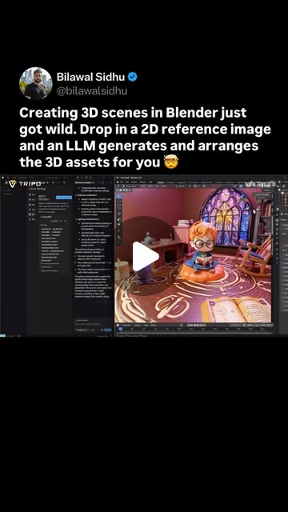
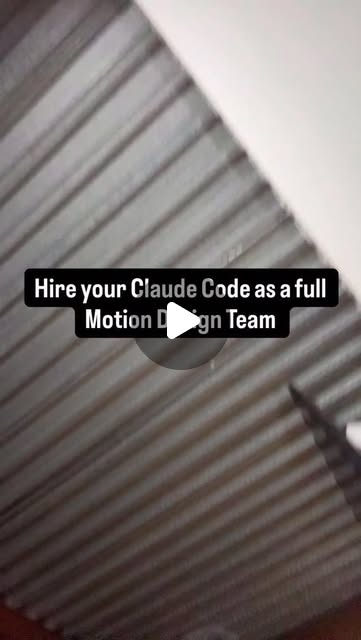
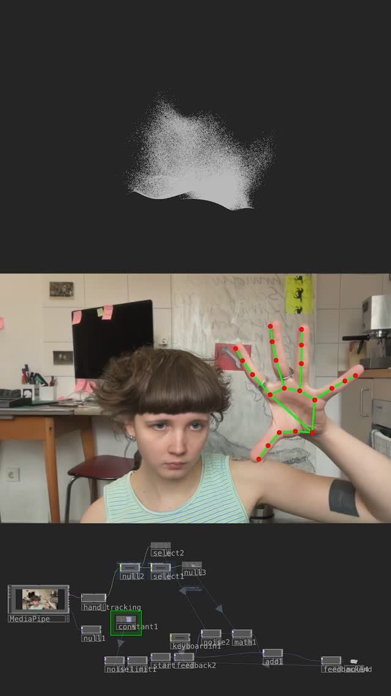

Natural Language → 3D Scenes: The Pipeline That Didn't Exist 6 Months Ago
Try It — Action Sketch
Set up Blender MCP server → connect to Claude Code → use Tripo/Hunyuan3D for mesh gen → describe scenes in plain English → get rigged, lit 3D environments. Add TouchDesigner for live interaction.
Connected Posts (4)



Prompt system — run this yourself
Pasteable into Claude Code, Claude, or any agent. One-shot for the whole result, step prompts when you want to steer. Every step carries its own audit; the gap audit makes the agent find and fill what it missed.
Mission. Produce a working text-or-image-to-3D-scene pipeline: Claude Code drives Blender through the Blender MCP server, Tripo and Hunyuan3D-2 generate the meshes, and the result is a saved .blend plus a headless render that matches a written brief or a 2D reference image. Built for a solo creator who wants to test whether language really is the modeling tool. Done means: three different briefs each produce a scene that opens and renders headless in Blender 4.x without errors, every generated mesh passes a geometry check, and a side-by-side against the reference is scored by someone other than the agent.
1 · Deeper, not bigger
- What a top professional would do (that you didn't ask for): A technical artist would first lock the pipeline contract: meters, up-axis, naming, polygon budget per asset, Principled BSDF materials. They would separate three jobs the demos blur: layout (cheap, scriptable), asset generation (slow, stochastic, paid) and look development (lights, camera, render). They would compare MCP against plain bpy scripts run headless, because Blender has been scriptable for 20 years and 'impossible before MCP' is a claim to test. They would cache every asset by prompt hash so re-runs cost zero.
- Rawest material to start from: 1) The Blender MCP source (github.com/ahujasid/blender-mcp): addon.py socket server, the tool list it exposes, and its Poly Haven / Hyper3D / Sketchfab hooks. 2) Blender Python API docs (docs.blender.org/api/current) for bpy.ops.import_scene.gltf, bpy.data, and headless flags. 3) Tripo API docs (platform.tripo3d.ai) for text_to_model, image_to_model, task polling, rigging and export formats. 4) Tencent Hunyuan3D-2 repo and model card (github.com/Tencent/Hunyuan3D-2, huggingface.co/tencent/Hunyuan3D-2): shape DiT + Paint texture stages, VRAM needs, and the license text. 5) The bilawal.ai demo caption (reference image, LLM decomposes scene, Tripo generates, arranges to match). 6) torinmb's mediapipe-touchdesigner plugin for the live-interaction extension.
- Methods and tools: uvx blender-mcp registered with `claude mcp add`; Blender 4.2 LTS headless via `blender -b file.blend --python script.py` and `-f 1` renders; bmesh checks for non-manifold edges and loose verts; KhronosGroup glTF-Validator on every .glb; trimesh for watertightness and bounding-box scale; a JSON scene graph as the single source of truth; CLIP or DINOv2 similarity between reference and render; Cycles at fixed seed for reproducible renders.
- What proves it right: Blender: each .blend renders headless with exit code 0 on a clean machine. glTF-Validator: zero errors on assets. A human who did not write the prompts rates render vs reference blind, 1-5. A control arm: the same brief as a pure bpy script with no MCP.
Rewritten prompt — ask for exactly that:
You are a technical artist building a reproducible language-to-3D pipeline. Use Blender 4.2 LTS with the ahujasid/blender-mcp server, the Tripo API for text/image-to-model, and Hunyuan3D-2 (local or web) as a second generator. First write a pipeline contract: meters, Z-up, naming scheme, triangle budget per asset (hero 50k, props 10k), Principled BSDF materials, a JSON scene graph that records every object, transform, generator, prompt and prompt hash. Then for three briefs (one text, one 2D reference image, one interior with lighting), decompose the scene into assets, generate each asset once and cache it by prompt hash, import and place via MCP, light and frame it, and save .blend plus a Cycles render at a fixed seed. Run a control: build brief 1 with a plain bpy script and no MCP. Verify every asset with bmesh non-manifold checks and glTF-Validator, verify every scene opens and renders with `blender -b`. Return the scene graphs, renders, a cost and time table per brief per arm, and a list of what failed and why. Do not claim rigging or animation works unless you exported it and played it back.
2 · One-shot prompt
ROLE: You are a technical artist and pipeline engineer. Your stance: language is an interface to Blender, not magic; every claim gets a render and a geometry check. CONTEXT: The source posts claim that Blender MCP plus Tripo turns a 2D reference image into a full 3D scene (bilawal.ai: 'LLM deconstructs the scene, figures out what 3D assets are needed, generates them using Tripo, and arranges them to match'), that Tencent Hunyuan3D-2 turns an image into a textured model in seconds via Generate Shape then Generate Textured Shape, and that this 'was impossible before MCP'. Tools available: Claude Code, Blender 4.2 LTS, github.com/ahujasid/blender-mcp (addon.py socket server plus `uvx blender-mcp`), Tripo API (TRIPO_API_KEY from env, never printed), Hunyuan3D-2 (local GPU or the Hugging Face Space), Python with trimesh, KhronosGroup glTF-Validator. Optional extension: TouchDesigner with torinmb's MediaPipe plugin for live hand-driven camera. HARD CONSTRAINTS: Never print or log API keys. Cache every generated asset under assets/<generator>/<sha1(prompt)>.glb and never regenerate a cached hash. Cap paid generation at 20 Tripo calls total; stop and report if hit. Meters, Z-up, triangle budget 50k hero / 10k prop. Every scene must open and render headless. Read the Hunyuan3D-2 license and record any territory or commercial-use restrictions before using its outputs. DELIVERABLES, in order: 1. pipeline/CONTRACT.md: units, axes, naming, budgets, material standard, scene-graph JSON schema. 2. MCP setup verified: list the tools the Blender MCP server exposes and run one round trip (create a cube, read its location back). 3. Three scenes: (a) text brief 'a cozy cabin in snow with warm interior lighting', (b) a 2D reference image you are given or pick from Poly Haven, (c) a tabletop of 5 props. For each: scene_graph.json, scene.blend, render.png (Cycles, 128 samples, seed 0, 1280x720). 4. Control arm: scene (a) rebuilt by a plain bpy script run with `blender -b --python` and no MCP. Record wall time, tokens and paid calls for both arms. 5. Asset QA table: per asset, generator, triangles, non-manifold edges, watertight yes/no, glTF-Validator errors, scale in meters. 6. If Tripo rigging is available on your plan, rig one character and play 24 frames; otherwise mark rigging UNVERIFIED. BUILT-IN GAP ANALYSIS: Before finishing, write GAPS.md with three lists. Unverified: every claim from the posts you could not test, with the reason. Missing: anything the brief needed that the pipeline could not produce (e.g. snow material, interior light leaks, glass). Filled: gaps you closed during the run and how. Then fix the top two missing items if fixable in under 30 minutes each. SELF-QUESTIONS you must answer in GAPS.md: Did MCP actually do something a bpy script could not? Are generated meshes at sane real-world scale, or did I scale by eye? Did I check the license before using Hunyuan3D outputs? Does the render match the reference in layout, or only in vibe? Which step costs the most time and money, and is it cacheable? Did any asset come back with baked lighting in its texture that fights the scene lights? STOP CONDITIONS: Stop when all three scenes render headless and GAPS.md is written, or when 20 paid calls are spent, or when the MCP socket fails three reconnects in a row (report the error text). RETURN FORMAT: A markdown summary with: a table of scenes (brief, arm, wall time, paid calls, tokens, render path), the asset QA table, the GAPS.md contents, and one paragraph verdict on whether the 'impossible before MCP' claim holds, citing the control arm numbers.
3 · Step-by-step prompts
Step 1 — Ground truth: read the sources and lock the contract
Goal: Know exactly what Blender MCP, Tripo and Hunyuan3D-2 can do before generating anything.
Read the raw sources, not blog posts. 1) Clone github.com/ahujasid/blender-mcp and read addon.py and the server module: list every tool it exposes (scene info, object ops, execute code, Poly Haven, Hyper3D, Sketchfab, any Hunyuan3D hook), the socket port, and what happens on errors. 2) Read the Tripo API docs: endpoints for text_to_model and image_to_model, task status polling, output formats, rigging and animation endpoints, pricing per call, rate limits. 3) Read the Tencent Hunyuan3D-2 README and model card: the two stages (shape, texture), VRAM required, inference time, and the full license text, especially territory and commercial-use clauses. 4) Read docs.blender.org/api/current for import_scene.gltf and headless command-line flags. Write pipeline/SOURCES.md with a capability table (tool, capability, verified-in-docs yes/no, cost, limit) and pipeline/CONTRACT.md with units = meters, Z-up, naming '<scene>_<asset>_<nn>', triangle budgets 50k hero / 10k prop, Principled BSDF only, and a scene_graph.json schema (id, asset_path, generator, prompt, prompt_sha1, location, rotation, scale, material_notes). Note the creators' claims you will test: scene decomposition from a 2D image, 'seconds' generation time, and 'impossible before MCP'.
Expect: pipeline/SOURCES.md with a 10-25 row capability table and pipeline/CONTRACT.md with the schema; a claims list of at least 4 items to test.
Audit before moving on: Every capability row must cite a file path or doc URL. Any capability you only saw in a social post is marked unverified. If the Hunyuan3D-2 license blocks your use case or territory, mark it and switch the second generator to Hyper3D or Poly Haven assets before continuing.
Step 2 — Wire Claude Code to Blender and prove a round trip
Goal: A working, tested MCP connection with a known tool surface.
Install Blender 4.2 LTS. Install the blender-mcp addon from the cloned addon.py, enable it, start the socket server from the sidebar. Register the server with Claude Code (`claude mcp add blender -- uvx blender-mcp`) and restart. Load TRIPO_API_KEY from the environment only; never echo it. Then run a smoke test through MCP: get scene info, create a 1 m cube at (0,0,0.5), read back its location and dimensions, assign a Principled BSDF material, save to scenes/smoke/smoke.blend. Close Blender. Re-open the file headless with `blender -b scenes/smoke/smoke.blend --python-expr "import bpy; print([(o.name, tuple(o.dimensions)) for o in bpy.data.objects])"` and confirm the cube exists at 1 m. Record in pipeline/MCP_LOG.md: tool names called, latency per call, any errors and their exact text, and whether the execute-code tool is enabled (it runs arbitrary Python inside Blender; note that as a risk and keep it for your own machine only).
Expect: scenes/smoke/smoke.blend, a headless printout showing a 1x1x1 m cube, pipeline/MCP_LOG.md with per-call latency.
Audit before moving on: Fail if the headless read disagrees with the MCP read-back, or if any key appears in logs (grep the repo for the first 6 chars of the key length pattern, never the key itself). On socket failure retry three times, then record the error and stop.
Step 3 — Asset generation with cache and QA
Goal: Generate every needed mesh once, cached and checked.
Write tools/gen_asset.py: input generator (tripo|hunyuan), prompt or image path; output assets/<generator>/<sha1>.glb plus a sidecar .json (prompt, generator, seconds, cost estimate, triangles). Skip generation if the hash exists. Hard cap 20 Tripo calls per run, counted in assets/budget.json. Then write tools/qa_asset.py using trimesh and a Blender bmesh pass: triangles, watertight, non-manifold edge count, loose verts, bounding box in meters, texture resolution, and glTF-Validator error count. For the cabin brief decompose into assets yourself first (cabin, door, window, chimney, pine trees x3, lantern, snow ground plane - the ground plane and snow should be procedural, not generated). Generate the hero cabin with both Tripo and Hunyuan3D-2 from the same prompt and compare. Time each call to test the 'seconds' claim. Rescale every asset to real-world size from a size table you write (door 2.0 m tall, tree 6-10 m) rather than by eye.
Expect: assets/ folder with cached .glb files and sidecars, assets/QA.csv with one row per asset, a timing table comparing Tripo and Hunyuan3D-2.
Audit before moving on: Any asset with glTF-Validator errors, triangles over budget, or bbox off by more than 2x from the size table is decimated, rescaled or regenerated once; on a second failure it is replaced by a Poly Haven asset or primitive and logged. Fail the step if budget.json exceeds 20.
Step 4 — Scene assembly from text and from a 2D reference
Goal: Build the three scenes through MCP from the scene graph, not from freehand calls.
For each scene write scene_graph.json first, then have Claude apply it through MCP: import each cached asset, set transform, assign or fix materials, add lights and camera. Scene A: 'a cozy cabin in snow with warm interior lighting' - warm 2700K point or area lights inside, cool sky (Nishita sky or Poly Haven HDRI), emissive windows, procedural snow on the ground. Scene B: reproduce a 2D reference image the bilawal.ai way - ask the model to list objects, their approximate positions, sizes and camera angle from the image, write that as the scene graph, generate missing assets, place them, then match camera focal length and height. Scene C: tabletop with 5 props from a text list. Save scene.blend and render.png per scene (Cycles, 128 samples, seed 0, 1280x720, denoise on). Log every MCP call to scenes/<id>/calls.jsonl.
Expect: Three scene folders, each with scene_graph.json, scene.blend, render.png, calls.jsonl.
Audit before moving on: Re-open each .blend headless and diff object names and transforms against scene_graph.json; any mismatch over 1 cm or 1 degree fails. For scene B compute image similarity (CLIP or DINOv2 cosine) between reference and render and record it; if the camera is clearly wrong, re-estimate focal length and re-render once.
Step 5 — Control arm: the same scene with no MCP
Goal: Measure what MCP actually adds over plain bpy scripting.
Rebuild Scene A without MCP. Ask Claude Code to write a single scripts/build_cabin.py that reads scenes/A/scene_graph.json, imports the same cached assets, builds the same lights, camera and snow, and renders - executed only with `blender -b --python scripts/build_cabin.py`. Do not reuse MCP logs; start from the scene graph. Record wall time, number of agent turns, tokens, and number of render iterations for both arms. Then do a blind comparison: put the two renders side by side with random left/right order and have a person who did not build them rate layout, lighting and believability 1-5. If no person is available, mark the comparison UNVERIFIED and use image similarity only. Write CONTROL.md with the numbers and a two-sentence finding: where MCP helped (live iteration, visual feedback, scene inspection) and where the script was equal or better (reproducibility, CI, version control).
Expect: scripts/build_cabin.py that renders headless, CONTROL.md with a two-arm table and the blind rating or UNVERIFIED flag.
Audit before moving on: The script must run from a clean Blender with only the cached assets present; run it twice and confirm identical object counts. If the script arm fails, fix it until it runs - an unfinished control is not a result.
Step 6 — Optional live layer: MediaPipe hands drive the camera
Goal: Prove the TouchDesigner extension or mark it out of scope.
Export Scene A as .glb (or .fbx) and load it in TouchDesigner via a File In SOP / Geometry COMP. Install torinmb's mediapipe-touchdesigner plugin, read its README for supported trackers and frame-rate notes. Map the index-finger tip x/y to camera orbit and pinch distance to dolly. Measure frame rate on your machine with Perform CHOP at 1280x720. Record the latency from hand move to camera move by filming the screen and the hand together at 60 fps and counting frames. If TouchDesigner is not installed or the GPU cannot hold 30 fps, mark this step OUT OF SCOPE in GAPS.md with the measured numbers rather than skipping silently. Note the export format that survived (glb vs fbx), any material loss on import, and whether textures had to be re-linked by hand.
Expect: A .toe file, a short screen recording, and an fps and latency line in pipeline/LIVE.md, or an explicit out-of-scope note with numbers.
Audit before moving on: Fail if fps is reported without the Perform CHOP reading or latency without the frame count method. Imported geometry must keep its meter scale; check one known object size inside TD.
Step 7 — Validate against oracles and write the gap report
Goal: Independent proof plus an honest list of what is still missing.
Run every oracle and record pass/fail with evidence. 1) Each scene .blend renders headless with exit code 0 on a fresh Blender profile (`blender --factory-startup -b ... -f 1`). 2) glTF-Validator zero errors on every asset. 3) assets/QA.csv has no over-budget or non-manifold hero assets. 4) Scene B similarity score and blind rating recorded. 5) CONTROL.md two-arm numbers present. Then write GAPS.md: Unverified claims from the posts (e.g. 'rigged' environments, 'seconds' generation, Unity/Unreal MCP equivalents), Missing capabilities found (glass, snow accumulation on geometry, interior light leaks, texture baked lighting), Filled gaps and how. Rank the missing list by impact on the next real project and fix the top two if each takes under 30 minutes. End with a verdict paragraph on 'impossible before MCP' citing the control numbers.
Expect: pipeline/VALIDATION.md with an oracle table and GAPS.md with three ranked lists and a verdict.
Audit before moving on: Every pass must link to a file or command output. If any oracle could not run, it is FAIL-UNRUN, not pass. Re-read the verdict and delete any sentence not backed by a number in CONTROL.md.
4 · Gap analysis and audit
You did not build this pipeline. Audit it. Read pipeline/CONTRACT.md, SOURCES.md, assets/QA.csv, every scenes/*/scene_graph.json, CONTROL.md, VALIDATION.md and GAPS.md. Enumerate every factual claim the build makes (asset counts, generation times, triangle counts, 'renders headless', similarity scores, cost per scene, the MCP-vs-script verdict). For each, mark VERIFIED (you re-ran the command or re-opened the file and got the same answer), UNVERIFIED (could not re-run; say why), or FALSE (you got a different answer; show both). Re-run at minimum: `blender --factory-startup -b scenes/A/scene.blend -f 1`, glTF-Validator on three random assets, and the scene-graph-vs-blend transform diff on scene B. Check the cache: re-run gen_asset.py on one cached prompt and confirm zero paid calls. Check secrets: grep the repo and logs for anything that looks like an API key. Check the license record for Hunyuan3D-2 outputs. List missing pieces (e.g. no UV check, no LOD, no collision meshes, no Unity/Unreal export test), rank by impact on shipping a real scene, fix the top three now, and report what you could not fix and why.
Questions the agent must ask itself before it says done:
- Did the Blender MCP server do anything that a bpy script run with `blender -b --python` could not do, and do I have numbers for that?
- Are generated assets at real-world scale from a size table, or did I eyeball them in the viewport?
- Did Tripo or Hunyuan3D-2 bake shading into the albedo texture, making the scene lighting look wrong?
- Did I read the Hunyuan3D-2 license text and record whether my territory and use are allowed?
- For the 2D reference scene, did I match the camera focal length and height, or only the object list?
- How many paid generation calls did each scene cost, and how many were cache hits on re-run?
- Is the execute-code MCP tool enabled, and did any agent call run Python I did not read?
- Did I verify 'rigged' by playing an animation, or am I repeating the caption?
- Do the renders reproduce exactly at seed 0, or does something nondeterministic remain?
- What breaks if Blender is upgraded from 4.2 to the next release - addon API, glTF importer, Cycles settings?
- Would a technical artist accept these meshes for a game engine (UVs, normals, triangle count), or only for a still render?
- Which part of the pipeline would I hand to a human next, and why?
5 · What proves it right
- Blender 4.2 LTS: `blender --factory-startup -b scenes/<id>/scene.blend -f 1` exits 0 and writes a render for all three scenes.
- KhronosGroup glTF-Validator: zero errors on every .glb in assets/, warnings listed.
- bmesh/trimesh QA: hero assets have zero non-manifold edges and stay under 50k triangles; output in assets/QA.csv.
- A human who did not build the scenes rates control vs MCP renders blind on a 1-5 scale; result in CONTROL.md.
- Re-running the full build with a warm cache makes zero paid Tripo calls (budget.json unchanged).
- Scene B: CLIP or DINOv2 cosine similarity between reference and render recorded, plus the camera focal length estimate.
6 · Failure modes
- Assets arrive at random scale. Tell: a 40 m door next to a 2 m tree. Fix: rescale every import from a written size table before placement.
- Texture has baked lighting. Tell: shadows painted on the side facing the key light. Fix: regenerate with neutral lighting prompt, or de-light by replacing albedo with a flat-lit bake.
- MCP socket drops mid-scene. Tell: tool calls time out, Blender sidebar shows server stopped. Fix: the scene graph is the source of truth, so restart and replay from scene_graph.json instead of from memory.
- Budget burn. Tell: budget.json climbing on re-runs. Fix: hash-keyed cache and a hard cap.
- The 2D reference match is vibe only. Tell: right objects, wrong camera. Fix: estimate focal length and camera height explicitly and record them in the scene graph.
- Execute-code tool runs unreviewed Python inside Blender. Tell: calls.jsonl shows raw code strings you never read. Fix: log every code payload and review before running on any machine with credentials.
- License surprise. Tell: you plan to sell assets generated by Hunyuan3D-2 without reading the license. Fix: record license terms in SOURCES.md in step 1 and switch generator if blocked.
7 · Agent direction (unattended runs)
Reach first for the cloned blender-mcp source and the Tripo docs; cache both locally in pipeline/sources/. Run Blender headless for every verification - never trust a viewport description from the model. Keep scene_graph.json as the only source of truth; MCP calls are a way to apply it, not the record. Cache generated assets by sha1(prompt) and never regenerate a hash. Spawn a sub-agent for the control arm (step 5) so it cannot reuse MCP context; give it only scene_graph.json and the cached assets. Spawn a second sub-agent for the gap audit with no access to your notes beyond the files. Stop and ask the human when: the paid-call cap is hit, the Hunyuan3D-2 license blocks the intended use, a person is needed for the blind rating, or the MCP socket fails three times. Never print API keys. Return: pipeline/VALIDATION.md, GAPS.md, CONTROL.md, assets/QA.csv, and the three render.png paths, plus a five-line summary with the MCP-vs-script verdict.
Prompt system updated 2026-10-22 · all prompt systems · JSON